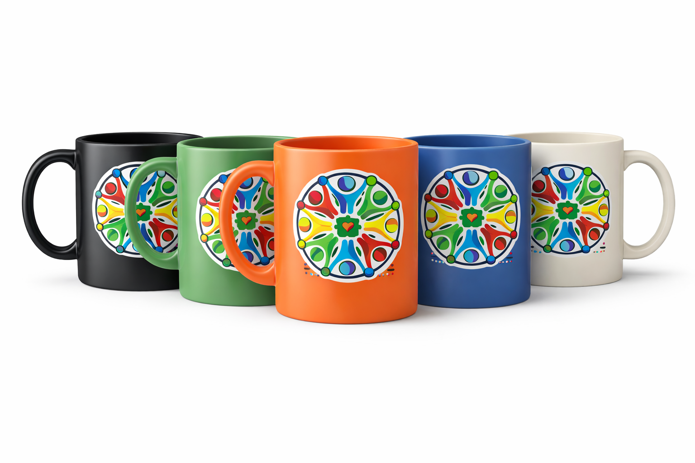
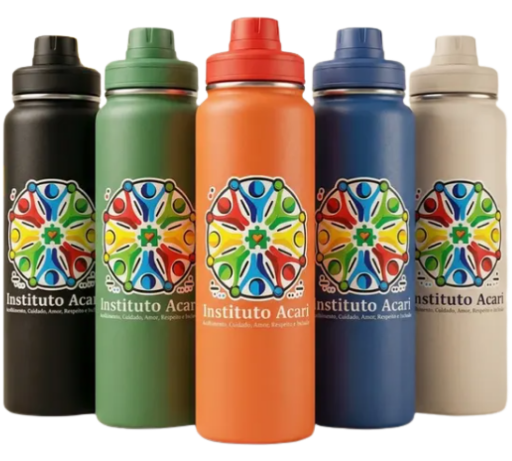
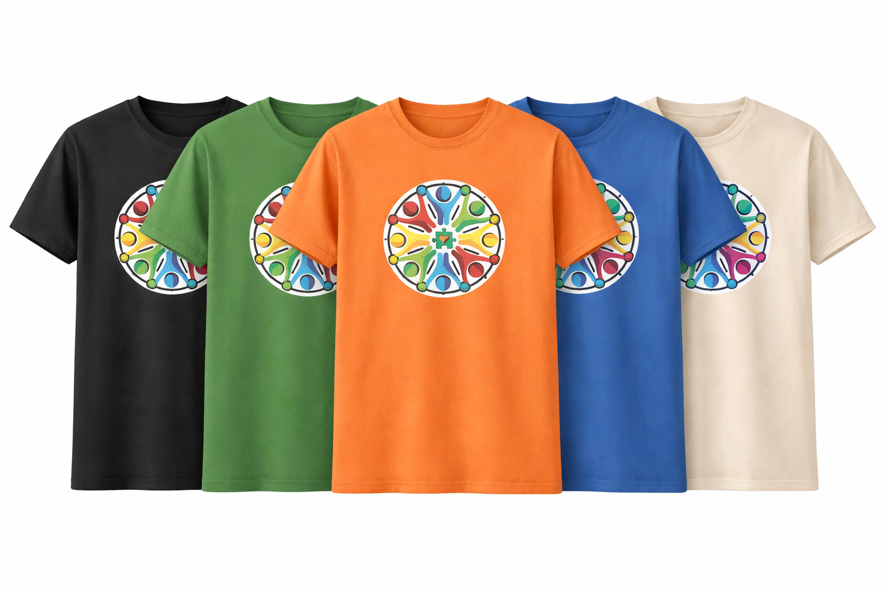

Caminho para a cura e a esperança. Encontre a peça que faltava para o seu equilíbrio emocional.
Fale com um conselheiroNossa Missão
O braço social da Igreja, unindo ciência e fé para acolher vidas.
Vista a Causa



Sua escuta e seu tempo podem ser a cura para alguém. Junte-se à nossa rede de apoio e ajude-nos a transformar realidades.
Onde estamos
Endereço:
Jardim Nova Itapevi
Itapevi - SP
Atendimento:
Segunda a Sexta: 09h às 18h
Sim, o acolhimento inicial e as rodas de conversa são gratuitos para a comunidade.
Não. Acolhemos toda e qualquer pessoa, independente de fé ou crença religiosa.
Não. Acolhemos toda e qualquer pessoa, independente de pertencimento religioso.
Não. Acolhemos toda e qualquer pessoa, independente de idade.